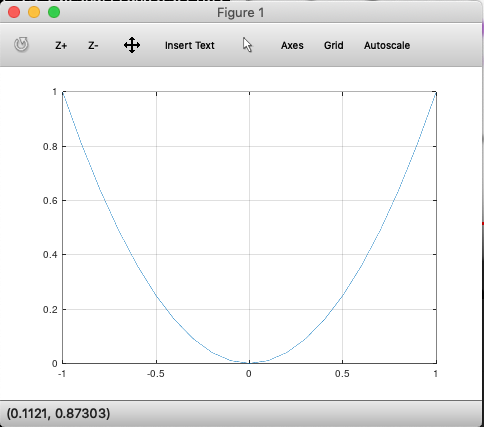
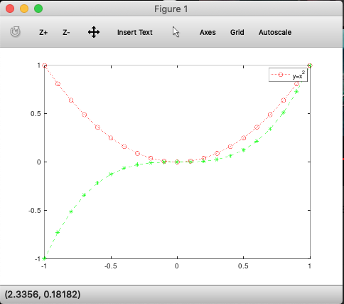
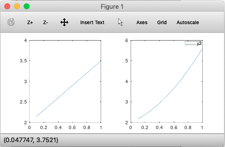
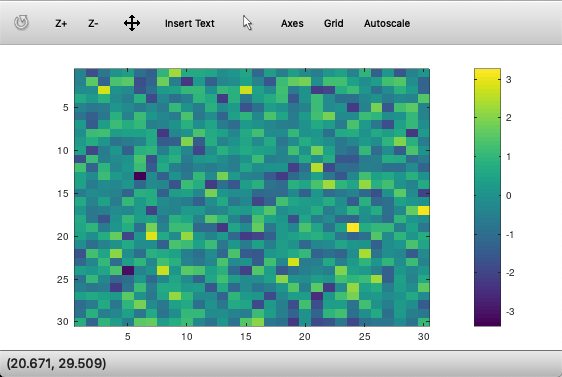

Handling and Plotting data in Octave / MATLAB
What’s in memory¶
To quickly view the variables in memory, use the who command. Use whos for detailed view
>> who Variables in the current scope: ans ar1 heat readings vec vec1 vec44 vec45 x y z >> whos Variables in the current scope: Attr Name Size Bytes Class ==== ==== ==== ===== ===== ans 1x78 78 char ar1 1x4 32 double heat 1x1 8 double readings 4x4 128 double vec 1x16 24 double vec1 1x4 32 double vec44 4x4 128 double vec45 4x5 160 double x 1x21 24 double y 1x21 168 double z 1x21 168 double Total is 218 elements using 950 bytes
To delete a variable from memory, use the clear <variable name> command. Just using the clear command will remove all variables.
Reading data files¶
Read datasets with load command. >> load('ex1data1.txt') A variable with the name of the file is created in memory. You can use array slicing, dicing to move a part of this data into a new variable.
>> load('ex1data1.txt'); >> subset = ex1data1(1:10,:) subset = 6.1101 17.5920 5.5277 9.1302 8.5186 13.6620 7.0032 11.8540 5.8598 6.8233 8.3829 11.8860 7.4764 4.3483 8.5781 12.0000 6.4862 6.5987 5.0546 3.8166
Saving data to disk¶
Use save <filename.extn> <variable> <-options> to save a variable to disk.
>> save 'subset.mat' subset
You can load this back into memory using the load command: load('subset.mat'). This time, since it is a mat file, Octave will load it with the original variable name.
To save data in a human readable form, use save <filename.txt> <variable> -ascii.
Plotting¶
Most 2D plots can be accomplished using plot(<arr1>, <arr2>, 'srt:options') function.
Line plots¶
plot(x,y); % will plot in a new window

We can customize the appearance of ticks and line by passing them as a string. For instance, r:* will make lines in red, * for points and : for dotted lines.
You can also customize the title, labels, legend as shown:
>> plot(x,y); >> xlabel('time[x]'); >> ylabel('y=x^2'); >> legend('y(x)') >> title('Function of time')
Overlaying plots¶
To overlay multiple plots on the same frame, use hold on command.
>> z = x.^3; >> plot(x,y, 'r:o') >> hold on >> plot(x,z, 'g--*')

You can also plot multiple plots in the same command as plot(x,y, x,z) which will overlay both y and z on the same plot window.
To close the current figure, call the close command.
Printing plots to disk¶
To print to disk, use the print command as print -dpng 'myplot.png'. This will print the current plot to disk.
Multiple plot windows¶
Use the figure(n) command to create new plot windows:
>> figure(1); plot(x,y1); >> figure(2); plot(y1,y2);
will open 2 plot windows, one for each plot command.
Subplots¶
Use the subplot(nrows, ncols, current_cell) command to create and activate a plot window:
>> subplot(1,2,1); >> plot(x,y1); >> axis([0,1]); % Sets axis limits. Syntax is axis([xmin, xmax, ymin, ymax]) >> subplot(1,2,2); >> plot(x,y2); >> legend('y2');
which produces:

Visualizing matrices as images¶
To quickly ‘see’ a matrix as a color coded image, use imagesc:
>> x=randn(900,1); % produces a standard normal dist, mean=0 >> size(x) ans = 900 1 >> x2d= reshape(x,30,30); % turns this vector to a 2d matrix >> imagesc(x2d); % turns this matrix to an image >> colorbar; % adds a colorbar legend
